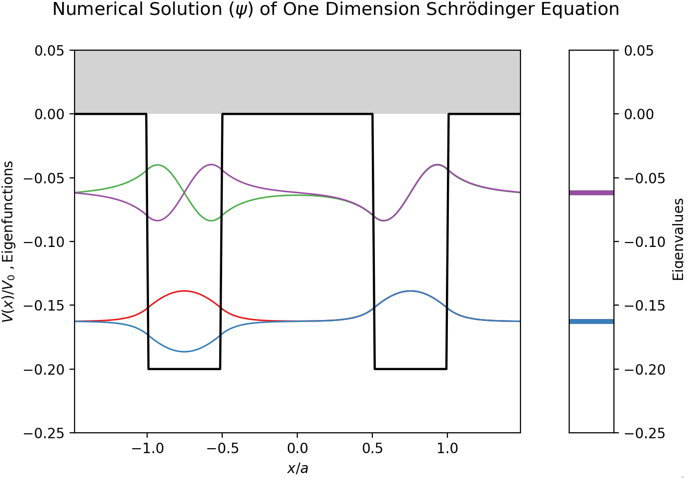

Quantum Mechanics
Contents
Quantum Mechanics¶
Quantum mechanics is one of the pillars of modern physics and chemistry. A large amount of the work carried out in computational physics and chemistry is concerned with the implementation of computer algorithms to perform quantum mechanical calculations with the goal of simulating molecular and material systems.
Here, we present a collection of web applications which demonstrate fundamental concepts underpinning quantum theory. Focus has been given to numerical methods employed in the solution of the time independent and dependent Schrödinger equation for systems in the presence of simple potentials.
1. Numerical Solution of the Schrödinger Equation for a 1D Quantum Well¶


This notebook solves numerically the quantum-mechanical problem of a single rectangular one-dimensional quantum well, and displays interactively the eigenfunctions (plotted at the height of the corresponding eigenvalues).

2. Numerical Solution of the Schrödinger Equation for the Double Square Well Potential¶


This notebook displays interactively the eigenfunctions for the double square well potential (DSWP) in one dimension, as obtained from the numerical solution of the associated time-independent Schrödinger equation. The double square well potential model is a simple but efficient way to describe real molecular or material systems.
{kind=link}
3. Avoided Crossing in One Dimensional Asymmetric Quantum Well¶


We demonstrate the phenomenon of avoided crossing by solving the Shrödinger equation of a one-dimensional asymmetric quantum well.

4. Shooting Method with Numerov Algorithm to Solve the Time Independent Schrödinger Equation for 1D Quantum Well¶


The main goal of this notebook is to demonstrate the shooting method with the Numerov algorithm to search for the eigenfunctions and eigenvalues of a 1D quantum well.

5. Numerical Solution of 1D Time Dependent Schrödinger Equation by Split Operator Fourier Transform (SOFT) Method¶


The split-operator Fourier transform (SOFT) method is presented and applied to solve the one-dimensional time-dependent Schrödinger equation with various potentials.